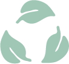

Over ons
Waar het begon?
Het verhaal van “Too Good To Go Amsterdam” begon met een gezamenlijke passie voor duurzaamheid en een diep verlangen om een positieve impact te maken in onze prachtige stad. In het hart van de bruisende metropool, werden enkele bevlogen individuen geconfronteerd met een verontrustende realiteit: voedselverspilling in Amsterdam bleef een prangend probleem.
Het besef dat bruikbaar voedsel dagelijks in de afvalbak belandde, deed ons niet stilzitten. In plaats daarvan vonden we inspiratie in deze onrechtvaardigheid en begonnen we aan een missie om verandering teweeg te brengen.
Wie zijn wij?
Too Good To Go is een diverse groep van vrijwilligers, buurtbewoners, voedselliefhebbers en technologie-enthousiastelingen, die allemaal één gemeenschappelijk doel delen: voedselverspilling verminderen en duurzaamheid bevorderen in Amsterdam. Van getalenteerde koks tot creatieve ontwerpers en milieuactivisten, het team vertegenwoordigt de veerkracht van onze stad.
